Коржнева Людмила Сергеевна
УЧИТЕЛЬ МАТЕМАТИКИ
«Если хотите научиться плавать, то смело входите в воду, если хотите научиться решать задачи, то решайте их».
Д. Пойа
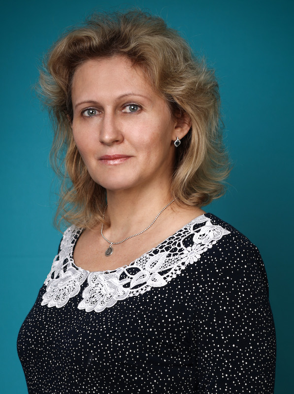
Профессия: учитель математики
Профессиональные интересы: методические разработки
Увлечения: путешествия
Регион: Республика Хакасия
Населенный пункт: г.Черногорск
Место работы: МБОУ "Гимназия"
Профессиональные интересы: методические разработки
Увлечения: путешествия
Регион: Республика Хакасия
Населенный пункт: г.Черногорск
Место работы: МБОУ "Гимназия"
Книги, которые сформировали мой внутренний мир
Джек Лондон. "Белый клык"
Достоевский Ф.М. "Преступление и наказание"
Пастернак Б.Л. "Доктор Живаго"
Ильф И. и Петров Е. "Двенадцать стульев"
Джек Лондон. "Белый клык"
Достоевский Ф.М. "Преступление и наказание"
Пастернак Б.Л. "Доктор Живаго"
Ильф И. и Петров Е. "Двенадцать стульев"
Мои достижения
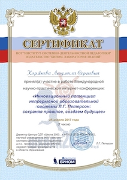 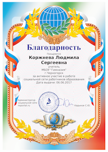
 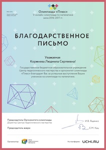
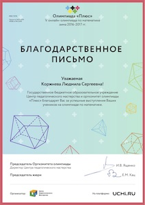
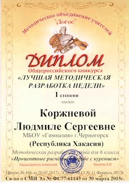 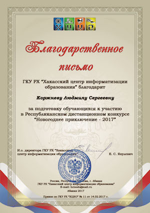
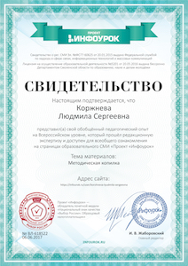
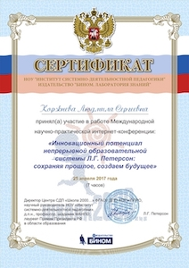 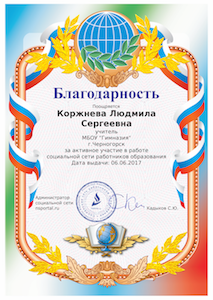
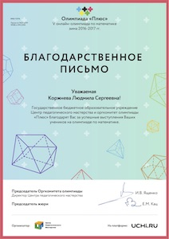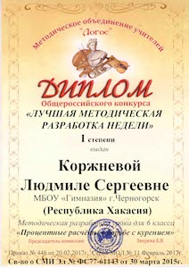 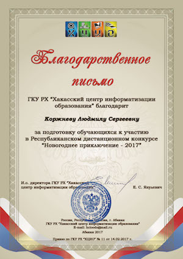
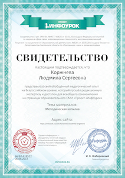
О себе
В 1987 году закончила Полтавский педагогический институт им. В.Г.Короленко. После окончания учебы начала работать в школе учителем математики. Не все было просто, но всегда было интересно. Поняла, что останавливаться учиться нельзя никогда. И еще нужно любить свое дело. И отвечать за результат.
В 1987 году закончила Полтавский педагогический институт им. В.Г.Короленко. После окончания учебы начала работать в школе учителем математики. Не все было просто, но всегда было интересно. Поняла, что останавливаться учиться нельзя никогда. И еще нужно любить свое дело. И отвечать за результат.
Моя работа в качестве классного руководителя.
Из тридцати лет работы в школе не было ни одного года без классного руководства. Особенно помнятся первые дети из маленькой крымской деревни Новожиловка: чистые, открытые, активные готовые помочь всегда и везде. Четыре выпуска. Все разные, все любимые. Последний выпуск 2016года: 10 аттестатов особого образца, призеры и победители муниципальных и региональных конкурсов и олимпиад различных направлений; отзывчивые, по - настоящему человечные. В 2016-2017 уч.г. взяла «пятачков». Вижу, что дети стали другими, мир меняется. Надо до них подтягиваться.Но зернышки очень перспективные, есть над чем работать!
Из тридцати лет работы в школе не было ни одного года без классного руководства. Особенно помнятся первые дети из маленькой крымской деревни Новожиловка: чистые, открытые, активные готовые помочь всегда и везде. Четыре выпуска. Все разные, все любимые. Последний выпуск 2016года: 10 аттестатов особого образца, призеры и победители муниципальных и региональных конкурсов и олимпиад различных направлений; отзывчивые, по - настоящему человечные. В 2016-2017 уч.г. взяла «пятачков». Вижу, что дети стали другими, мир меняется. Надо до них подтягиваться.Но зернышки очень перспективные, есть над чем работать!
Разработки
- Внеклассная работа по математике Театр задач.ppt
- Задачи НРК.DOC
- НПК Применение методов статистики при изучении отношения учащихся 8.doc
- Презентация Индивидуальная траектория учащегося прии подготовке к ОГЭ по математике..ppt
- Презентация Оценочная деятельность.pptx
- Презентация Поддержка этапов урока средствами ИКТ.ppt
- Презентация Современный урок математики.ppt
- Презентация к уроку Процентные расчеты в борьбе с курением 6 класс.ppt
- Презентация к уроку по теме Подобие.ppt
- Презентация по внеклассной работе по математике 5-6 класс Заморочки.ppt
- Рабочая программ по алгебре 7класс.docx
- Рабочая программа по алгебре 9 класс.docx
- Рабочая программа по внеурочной деятельности 8кл Лаборатория нестандартных задач.doc
- Рабочая программа по внеурочной деятельности Практическая геометрия 9 класс.doc
- Рабочая программа по внеурочной деятельности. 6кл Наглядная геометрия.doc
- Рабочая программа по геометрии 7класс.docx
- Рабочая программа по геометрии 9 класс.docx
- Рабочая программа по математике 5 класс.docx
- Разработка урока Решение задач на проценты практической направленности.doc
- Разработка урока по геометрии в 7 классе Признаки равенства треугольников.doc
- Технологическая карта к уроку Процентные расчеты в борьбе с курением 6 класс.docx
Достижения моих учеников
ОЛИМПИАДА_МИФИ_Ананьев.doc
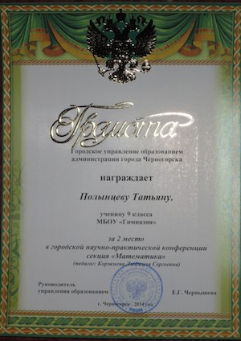
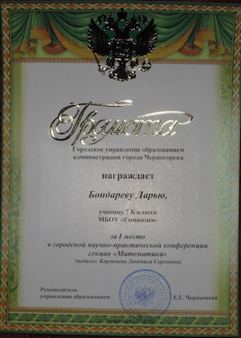
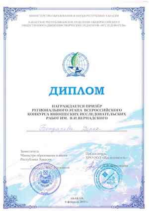
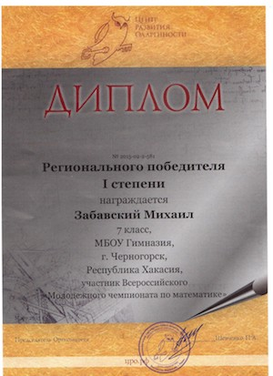
ОЛИМПИАДА_МИФИ_Ананьев.doc
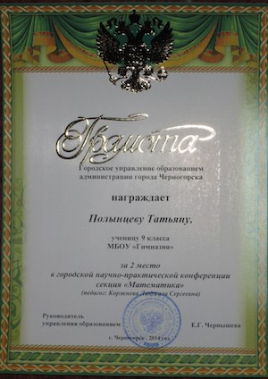
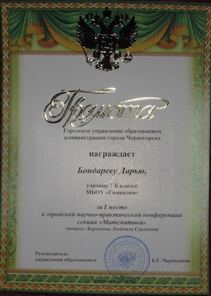
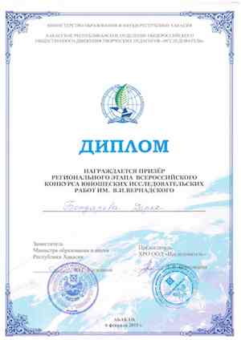
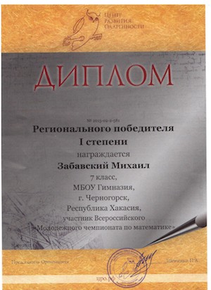
© 2017